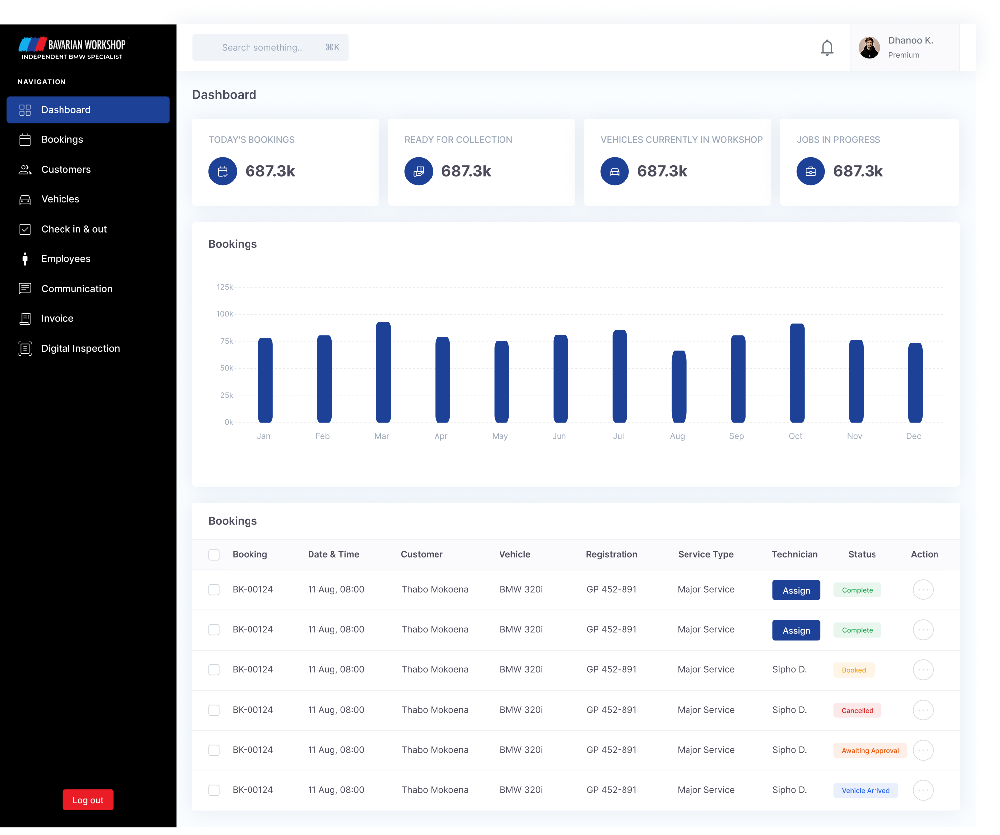
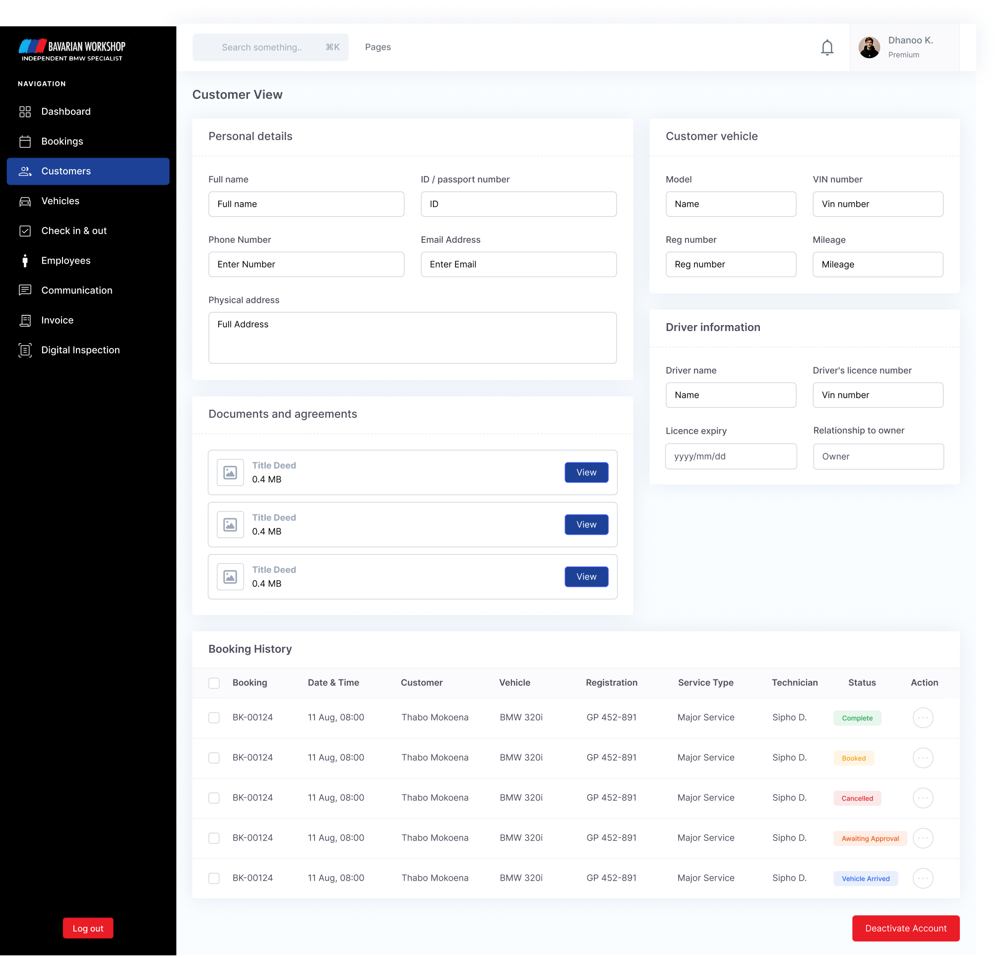
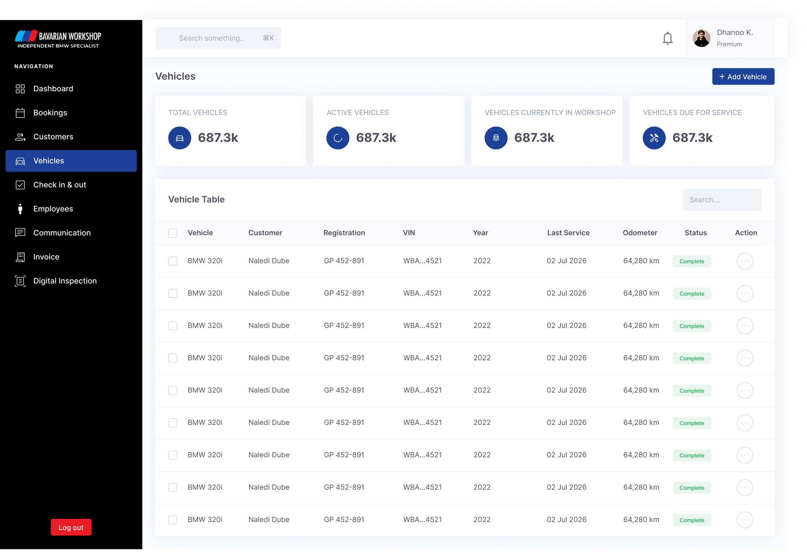
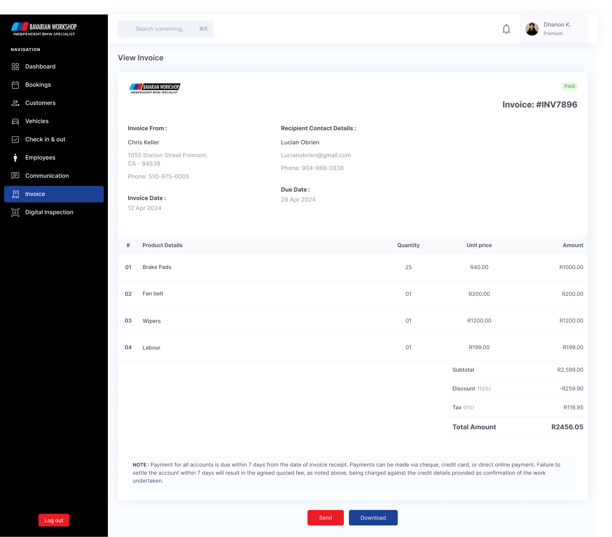
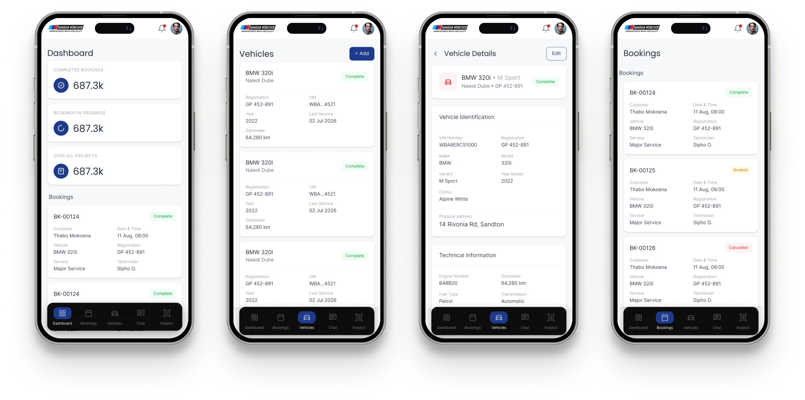

Case study
Bavarian Workshop
Overview
Bavarian Workshop is a management system for an independent BMW specialist. Customers can book a service or report a vehicle issue. Workshop staff can manage those bookings, check vehicles in on arrival, track the work, and record checkout when the vehicle is collected.
- Product
- Workshop management software
- Scope
- Booking through vehicle collection
- Platform
- Desktop and mobile
The design screens use sample records and figures to illustrate the workflow.
Bookings and service progress
See what’s booked and what’s underway
The dashboard brings upcoming bookings and active service jobs into one view. The booking list shows the scheduled time, customer, vehicle, service type, assigned technician, and current status, so staff can see what’s due in and what’s already in progress.


Customer records
Keep the customer and booking history together
The customer record brings contact details, vehicle and driver information, documents, and past bookings together. When a customer returns, staff can review previous visits from the same record.


Vehicle records
Follow the vehicle from arrival to collection
Staff can find a vehicle by registration or VIN and review its customer, last service date, odometer reading, and status. The check-in and checkout workflow records when the workshop takes in the vehicle and when it’s handed back.


Invoicing
Give customers a clear breakdown of the bill
The invoice view lists charges line by line, with quantities, unit prices, and the total. Staff can review the recipient details, dates, and payment status, then save or download the invoice.


Mobile
Check bookings and vehicle details away from the desk
The mobile layout gives workshop staff access to the dashboard, vehicle list, vehicle details, and bookings. Information appears in stacked cards so staff can scan the status of a booking or look up a vehicle on their phone.

